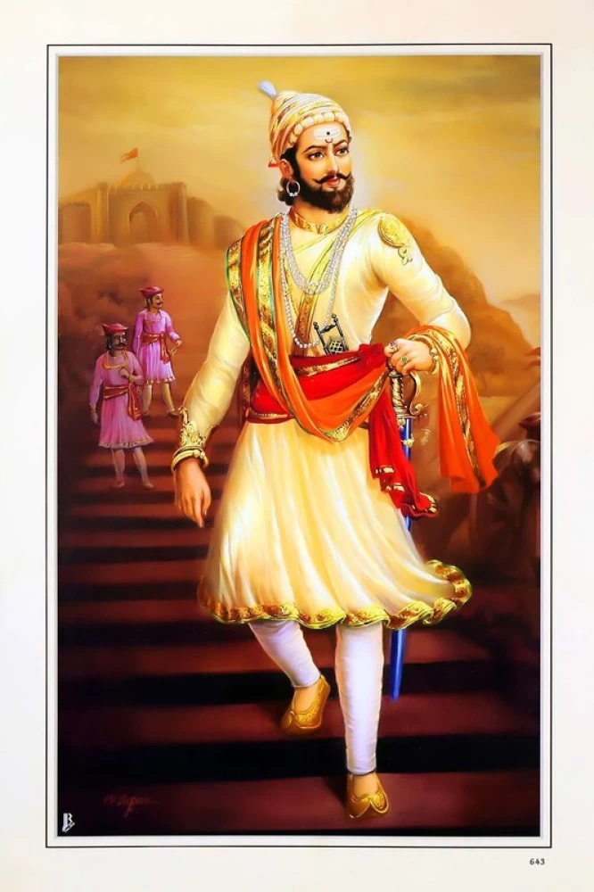
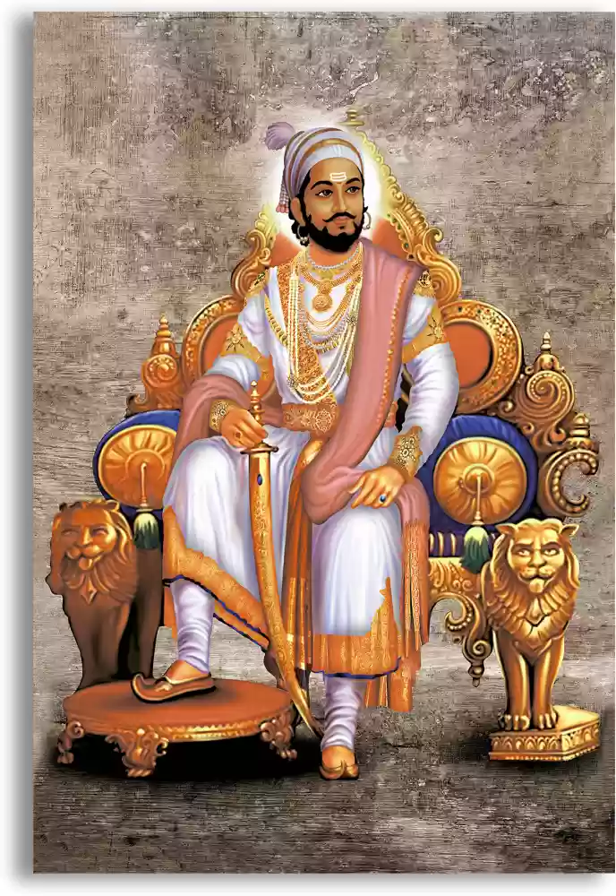

"Even if there were a sword in the hands of everyone, it is willpower that establishes a government."
"Even from enemies, a man can learn. The better a man becomes, the fewer his enemies."
----Quotes by Chhatrapati Shivaji Maharaj
CHHATRAPATI SHIVAJI MAHARAJ INFO
Shivaji I (Shivaji Shahaji Bhonsale, 19 February 1630 – 3 April 1680)was an Indian ruler and a member of the Bhonsle dynasty.Shivaji carved out his own independent kingdom from the Adilshahi Sultanate of Bijapur that formed the genesis of the Maratha Confederacy. In 1674, he was formally crowned the Chhatrapati of his realm at Raigad Fort.
Throughout his life, Shivaji engaged in both alliances and hostilities with the Mughal Empire, the Sultanate of Golkonda, the Sultanate of Bijapur and the European colonial powers. Following the Battle of Purandar, Shivaji entered into vassalage with the Mughal empire, assuming the role of a Mughal chief and undertaking military expeditions on behalf of the empire for a brief duration.Shivaji's military forces expanded the Maratha sphere of influence, capturing and building forts, and forming a Maratha navy. Shivaji established a competent and progressive civil administration with well-structured administrative institutions. He revived ancient Hindu political traditions, and court conventions and promoted the use of the Marathi and Sanskrit languages, replacing Persian at court and in administration. Praised for his chivalrous treatment of women,Shivaji employed people of all castes and religions, including Muslims and Europeans, in his administration and armed forces.
Shivaji's legacy was to vary by observer and time, but nearly two centuries after his death he began to take on increased importance with the emergence of the Indian independence movement, as many Indian nationalists elevated him as a proto-nationalist, founder of the Swaraj movement, and hero of the Hindus.


Vision of Chhatrapati Shivaji Maharaj:
Chhatrapati Shivaji Maharaj envisioned a strong, independent, and prosperous Maratha kingdom that would be free from foreign domination and tyranny. His vision was to establish Swarajya (self-rule) where his subjects could live with dignity, security, and justice. He aimed to create a kingdom where Hindu culture and traditions could thrive and where all communities could live in harmony, respecting each other's beliefs and customs.
Mission of Chhatrapati Shivaji Maharaj:
Establishment of Swarajya: His primary mission was to liberate his people from the oppressive rule of foreign powers, particularly the Mughal Empire and the Bijapur Sultanate, and to establish a sovereign Maratha state.
Administrative Reforms: Shivaji Maharaj focused on creating a well-structured administrative system. His mission included the development of a robust and efficient governance model that would ensure justice, economic stability, and the welfare of his subjects.
Military Strength: He aimed to build a strong military to defend his kingdom from external threats and to expand his territory. He was known for his innovative guerrilla warfare tactics and for fortifying key strategic locations.
Promotion of Maritime Trade: Shivaji Maharaj also had a mission to promote trade and commerce by securing and developing coastal regions, which would not only enhance the kingdom’s wealth but also ensure its security against naval threats.
Cultural Preservation: He worked towards the revival and preservation of Hindu culture, traditions, and temples that were under threat during his time. He aimed to restore the pride and heritage of his people.
Inclusive Governance: Despite being a Hindu king, Shivaji Maharaj’s mission included fostering an inclusive society where people of all religions could coexist peacefully. He appointed people from different communities to high positions in his administration based on merit, not religion.